| Published:
08/29/2014. Revised:
09/13/2014
. Copyright © 2014 by Victor Manta, Switzerland / USA. All rights reserved worldwide. |
|
THE MOST BEAUTIFUL EUROPEAN STAMP OF THE YEAR
(Issued in 2012 - Awarded in 2014)
At the 24 th International Postal Stamps Fair in Essen, Germany , May 8 - 10, 2014 a souvenir sheet issued by Germany was awarded the first place, this after having won the same place at a similar competition in its own country.
As expected from this web site, the stamp shows a painting, and not anyone but the one that is considered an apogee of the Western art. We show below an image of the original work of art, The Sistine Madonna, by the Italian artist Raphael, a masterpiece that was painted between 1512 - 1513. Please notice the famous two cherubim who rest on the lower part of the frame. The painting is exhibited at the Gemäldegalerie Alte Meister in Dresden, Germany. Source.
When compared with reproductions of it that appeared before 2012, it looks like the painting went through a process of restoration, like many other renown paintings of old masters but this is not the case. The rejuvenation came about quite naturally, with the gift that the painting received for its 500th birthday: the new framework including new glazing. The former frame contained greenish-gray tones, and the glazing contained also that tone. Source in German (thank you, Terry Reedy from RCSD).
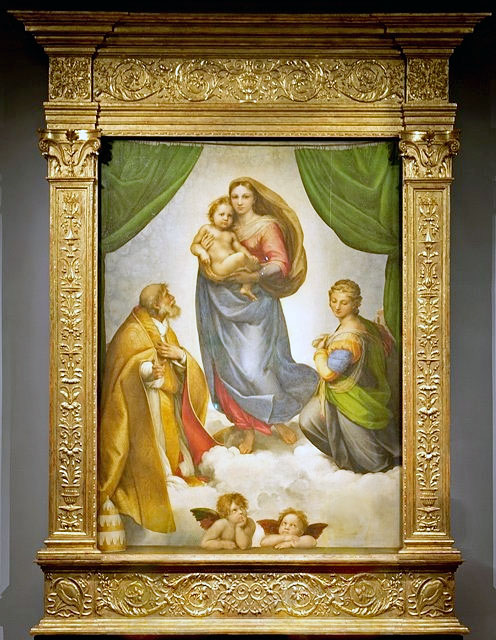
This painting, being so renown, appeared quite often on the stamps of different countries. An excerpt of it appeared for the first time on a stamp issued on August 14, 1954 (60 years ago) by Saar , Mi. 352, print run 1 million. Thanks to this large print run the stamp is still largely available. Because it was valid for postage till the end of August, 1956, which means only a month, it is more expensive when it is cancelled.
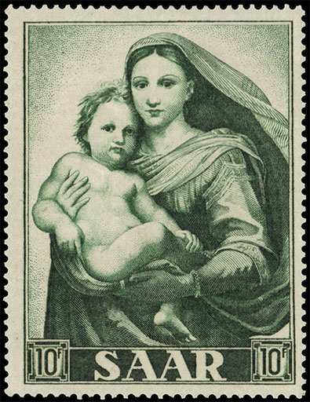
A much larger excerpt of the painting appeared on a souvenir sheet issued on March 20 th , 1983 by the North Korea , Michel # 2340, S/S 140 (81 x 106 mm). The choice of the subject was dictated by the permanent desire of grabbing precious convertible currency from the Western stamp collectors. The large text spoils a large part of the painting. The lower part of the original painting was snipped, the wings of the angels probably being considered too religious by the communist censors.
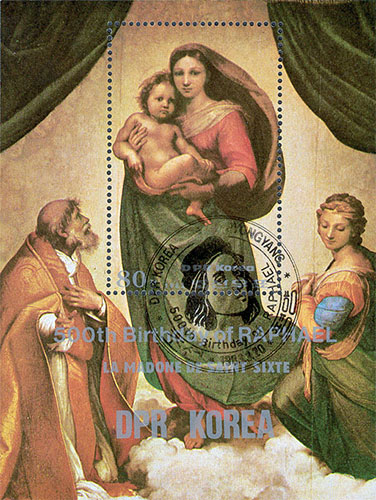
I show below the missing cherubims, as they appeared on two attractive USA stamps, issued in booklet on May 12, 1995, Michel 2560A - 2561A.
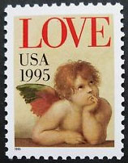
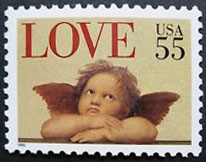
After this short introduction let us go to the souvenir sheet that was awarded the first place in Europe, issued on March 1 st , 2012 by the German Post, Michel # 2919, block 79 (98 x 134 mm), print run: not known. The S/S commemorates the 500 years of the painting itself. Please note, by comparing with the original painting, that the work of art is reproduced in full, and that the colors follow that of the original, shown on the right. The low face value of Euro 0.55 only surely contributed to the fact that the S/S is not available anymore online on the Deutsche Post site.
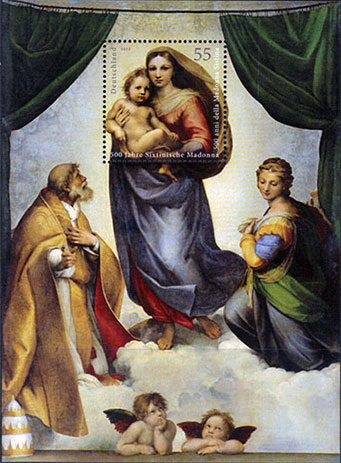
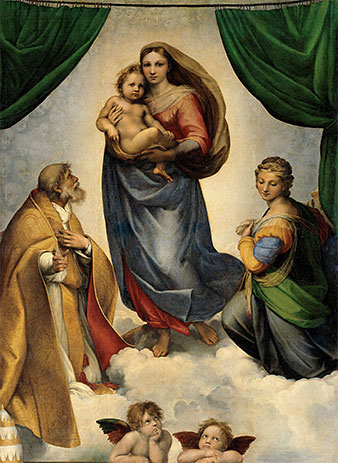
On November 2, 2012 the Deutsche Post issued the central stamp of the S/S in a stamp booklet
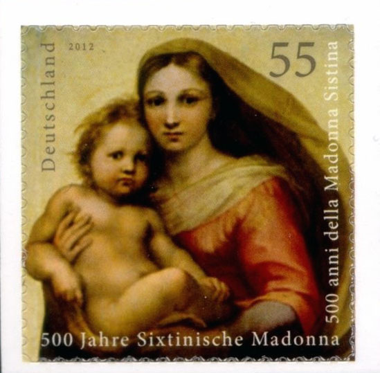
and as a separate stamp on a foil sheet (Michel 2965, MH 90).
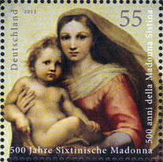
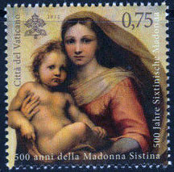
Actually these stamps are part of a joint issue with Vatican , which issued exactly the same S/S on the same date, March 1 st , 2012, Michel # 1736, S/S 37 (97 x 124 mm), print run 200,000 S/S.
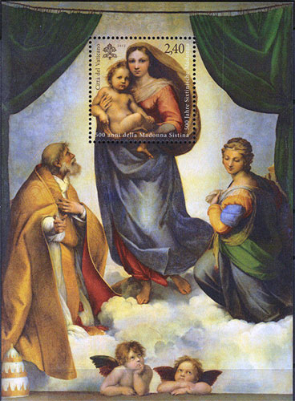
I suppose that this S/S didn't participate in the mentioned European competition. An obvious question that arises is why Italy , the country of the painter, didn't participate in this joint issue. The explanation that I found is that Italy already issued a stamp dedicated to the Sistine Madonna in 1983, in a set dedicated to the 500th birth anniversary of Raphael (1483 – 1520), Michel # 1862, print run 50 millions sets. The stamp is not particularly attractive, and it is very sensitive to water and gasoline.
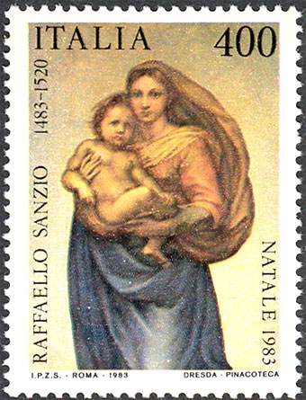
In my opinion the Italian Post should have reissued this stamp by the same occasion, as part of a joint issue with Germany and Vatican.
You can find more information about the painter and its masterpiece on the page dedicated to The Colors of Sistine Madonna.
More related links on this site:
- Sistine on... Dunes
- Raphael Madonna 1
- Raphael Madonna 2
| Published:
08/29/2014. Revised:
09/13/2014
. Copyright © 2014 by Victor Manta, Switzerland / USA. All rights reserved worldwide. |
|